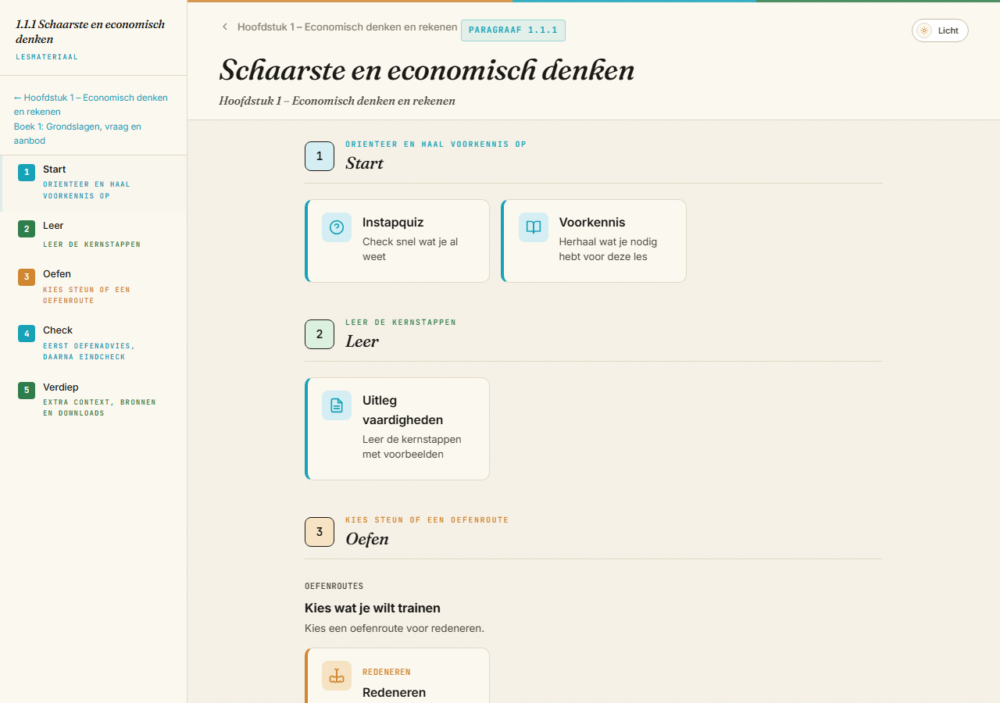
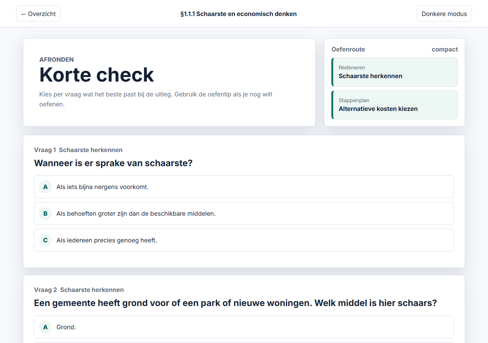
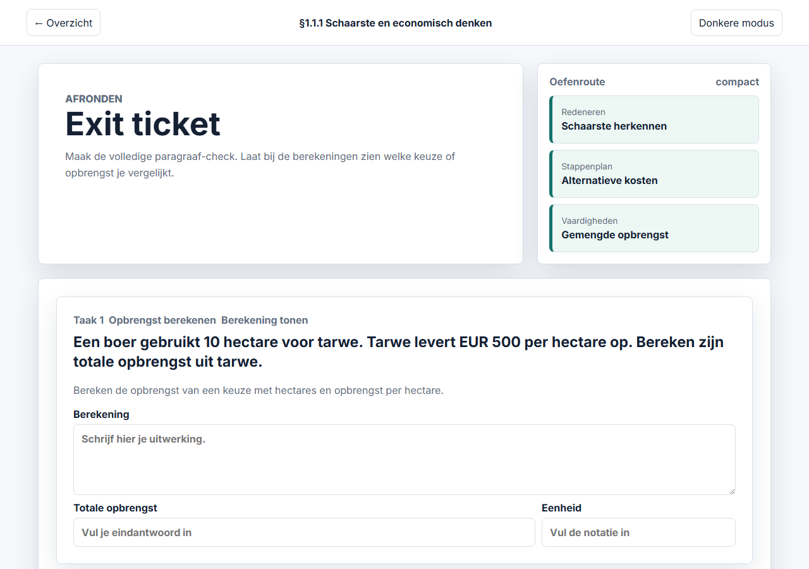
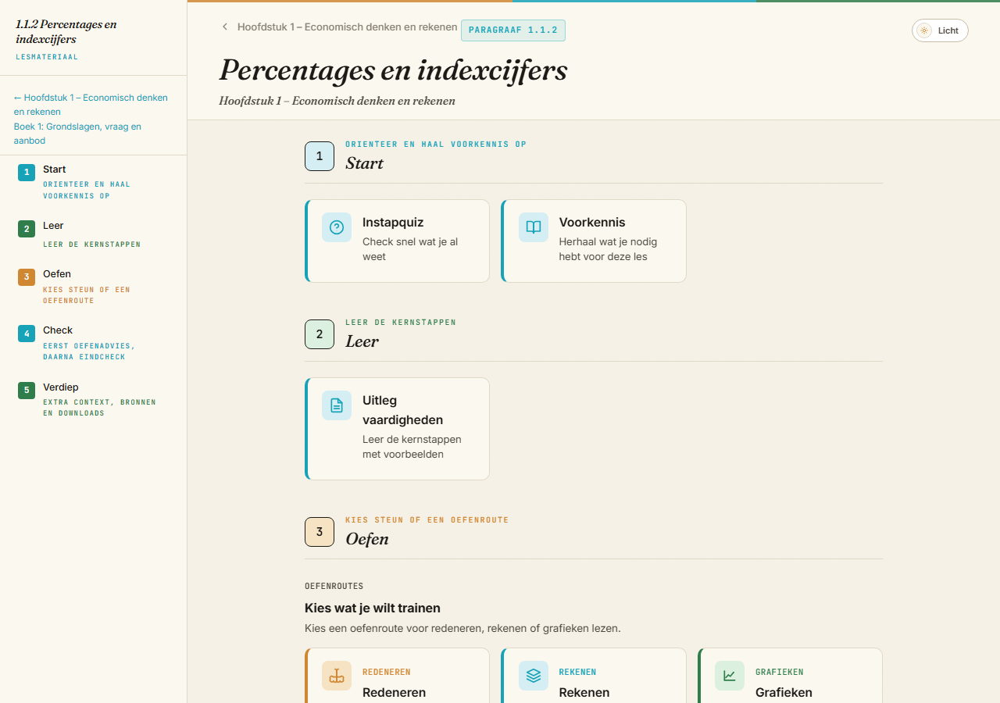
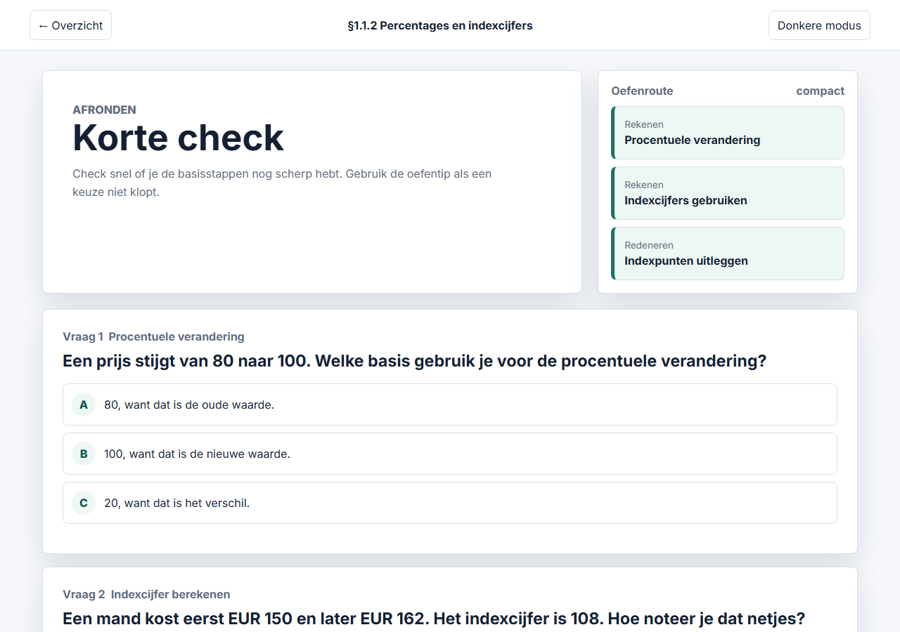
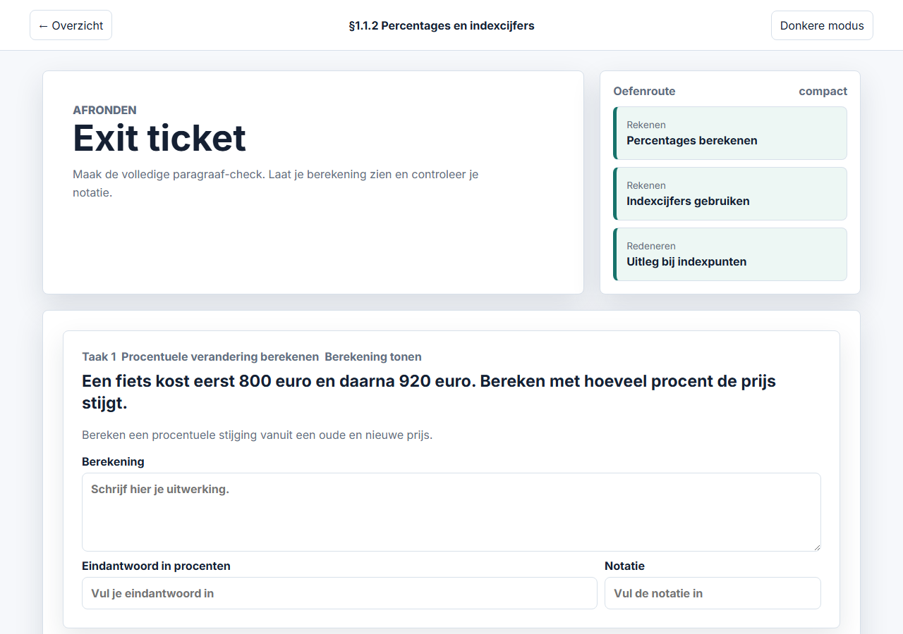
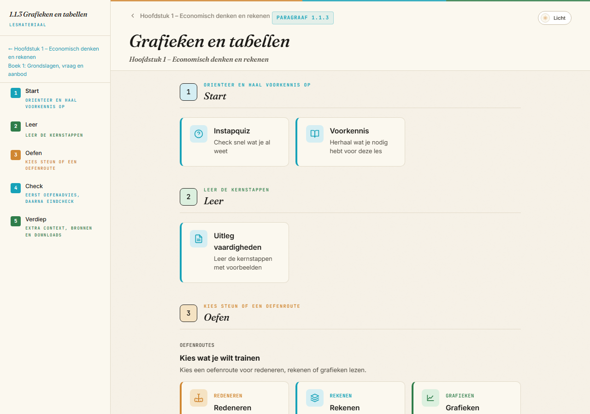
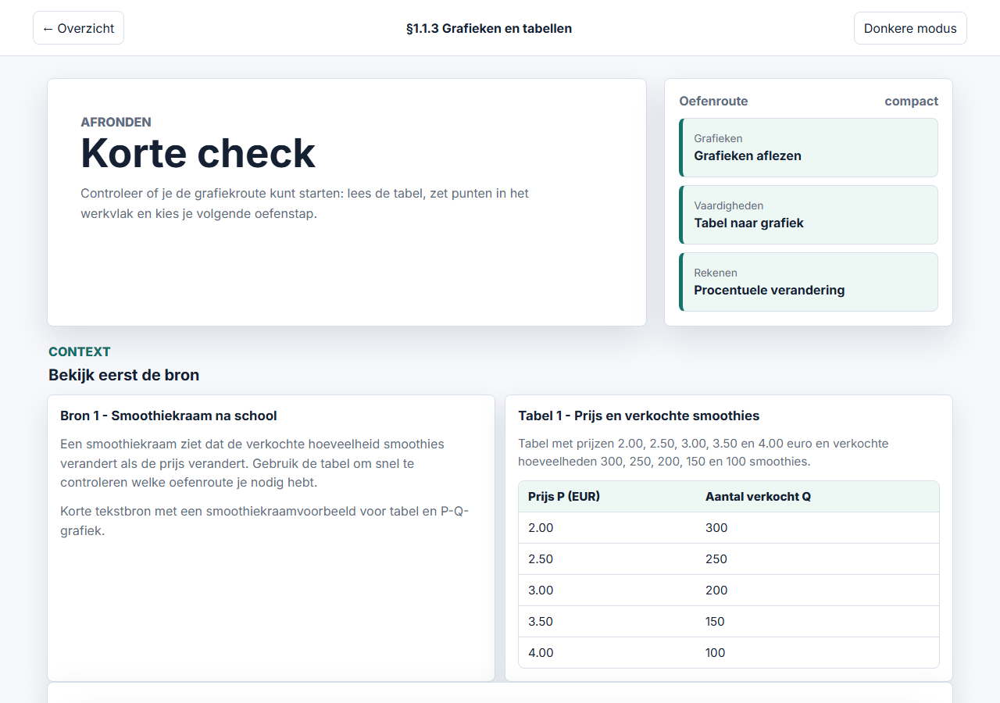
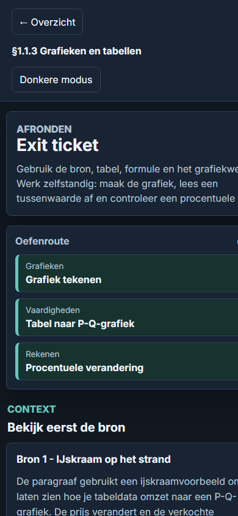

Authority Boundary
New 1.1.1 and 1.1.3 exit-ticket completion language remains held. 1.1.2 preserves the previously reviewed local completion-language approval. Scale Gate 1, diagnostics, mastery, sequencing, PV, and student/product use remain unauthorized.
Generated Pages
Screenshot Proof









